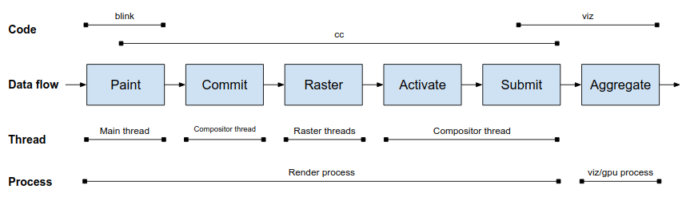

Chromium CC
Table of Contents
1. Terminology
- Layer: A Layer is a rectangle of content, with various properties describing how that content should appear on screen.
- GraphicsContext: A GraphicsContext is responsible for writing the pixels into a bitmap that eventually get displayed to the screen.
- compositor: The compositor is ultimately responsible for combining the bitmap output of GraphicsContexts together into a final screen image in a subsequent compositing pass.
2. Overview
cc is short for “Chrome compositor”, now a days it’s neither a chrome compositor nor a compositor any more. A more accurate name is “content collator”.
cc is responsible for turning a painted representation of that content (e.g. a PaintRecord) into a rasterized representation (a software bitmap or a gpu texture) and figuring out where that rectangle appears on screen.
cc reside in both Browser Process and Renderer Process.
3. Content data flow overview


3.1. Paint
3.1.1. Phase
- PrePaint
- Paint invalidation: marks anything that need to be painted differently from the original cached painting.
- Builds paint property trees
PrePaintTreeWalk in file: thirdparty/blink/renderer/core/paint/prepainttreewalk.h
Invalidation and builds paint property trees by method.
void Walk(const LayoutObject&, const PrePaintTreeWalkContext& parent_context, NGPrePaintInfo*);
Paint
LayoutObject -—> BlockPainter -—> display list -—> PaintController
- create display item list from LayoutObject tree.
- Groups the display list into paint chunks which share the same property tree state.
- Commits the results to the compositor
- Choose which cc::Layers to create.
- Passes the paint chunks to the compositor in a cc::Layer list.
- blink property tree nodes -> cc property tree nodes
3.1.2. Algorithms
from layout | v +------------------------------+ | LayoutObject/PaintLayer tree | +------------------------------+ | | | | PrePaintTreeWalk::Walk() | | PaintPropertyTreeBuider::UpdatePropertiesForSelf() | v | +--------------------------------+ |<--| Property trees | | +--------------------------------+ | | | LocalFrameView::PaintTree() | | FramePainter::Paint() | | PaintLayerPainter::Paint() | | ObjectPainter::Paint() | v | +---------------------------------+ | | DisplayItemList/PaintChunk list | | +---------------------------------+ | | | |<---------------------------------+ | LocalFrameView::PushPaintArtifactToCompositor() | PaintArtifactCompositor::Update() | +---+---------------------------------+ | v | | +----------------------+ | | | Chunk list for layer | | | +----------------------+ | | | | | | PaintChunksToCcLayer::Convert() | v v v +----------------+ +-----------------------+ | cc::Layer list | | cc property trees | +----------------+ +-----------------------+ | | +------------------+ | to compositor v
3.2. Processes
- Renderer
- Viz/Gpu Process
3.3. Threads
- Main thread
- Compositor thread
- Raster threads
4. Misc
4.1. PrePaintTreeWalk::Walk() Call stack
#0 0x7ffff7e6713c base::debug::CollectStackTrace() #1 0x7ffff7ba434a base::debug::StackTrace::StackTrace() #2 0x7ffff7ba4305 base::debug::StackTrace::StackTrace() #3 0x7ffff7e66bfc base::debug::(anonymous namespace)::StackDumpSignalHandler() #4 0x7fffb3aad520 (/usr/lib/x86_64-linux-gnu/libc.so.6+0x4251f) #5 0x7fffb3b01a7c pthread_kill #6 0x7fffb3aad476 raise #7 0x7fffb3a937f3 abort #8 0x7fffb3a9371b (/usr/lib/x86_64-linux-gnu/libc.so.6+0x2871a) #9 0x7fffb3aa4e96 __assert_fail #10 0x7fffc8b2593a blink::PrePaintTreeWalk::Walk() #11 0x7fffc8b258af blink::PrePaintTreeWalk::Walk() #12 0x7fffc8b2534e blink::PrePaintTreeWalk::WalkTree() #13 0x7fffc74cb40e blink::LocalFrameView::RunPrePaintLifecyclePhase() #14 0x7fffc74ca140 blink::LocalFrameView::UpdateLifecyclePhasesInternal() #15 0x7fffc74c8de7 blink::LocalFrameView::UpdateLifecyclePhases() #16 0x7fffc74c8470 blink::LocalFrameView::UpdateAllLifecyclePhases() #17 0x7fffc89388c7 blink::PageAnimator::UpdateAllLifecyclePhases() #18 0x7fffc891f9f4 blink::Page::UpdateLifecycle() #19 0x7fffc7628044 blink::WebFrameWidgetImpl::UpdateLifecycle() #20 0x7fffc16f1cf1 blink::WidgetBase::UpdateVisualState() #21 0x7fffc1680de5 blink::LayerTreeView::UpdateLayerTreeHost() #22 0x7fffef6c4c8a cc::LayerTreeHost::RequestMainFrameUpdate() #23 0x7fffef7d88fb cc::ProxyMain::BeginMainFrame() #24 0x7fffef7d5a2c base::internal::FunctorTraits<>::Invoke<>() #25 0x7fffef7d5922 base::internal::InvokeHelper<>::MakeItSo<>() #26 0x7fffef7d58be _ZN4base8internal7InvokerINS0_9BindStateIMN2cc9ProxyMainEFvNSt2Cr10unique_ptrINS3_28BeginMainFrameAndCommitStateENS5_14default_deleteIS7_EEEEEJNS_7WeakPtrIS4_EESA_EEEFvvEE7RunImplISC_NS5_5tupleIJSE_SA_EEEJLm0ELm1EEEEvOT_OT0_NS5_16integer_sequenceImJXspT1_EEEE #27 0x7fffef7d5807 base::internal::Invoker<>::RunOnce() #28 0x7ffff7b52b89 _ZNO4base12OnceCallbackIFvvEE3RunEv #29 0x7ffff7d4da1e base::TaskAnnotator::RunTaskImpl() #30 0x7ffff7da51d0 base::TaskAnnotator::RunTask<>() #31 0x7ffff7da4df3 base::sequence_manager::internal::ThreadControllerWithMessagePumpImpl::DoWorkImpl() #32 0x7ffff7da3fd2 base::sequence_manager::internal::ThreadControllerWithMessagePumpImpl::DoWork() #33 0x7ffff7da5103 base::sequence_manager::internal::ThreadControllerWithMessagePumpImpl::DoWork() #34 0x7ffff7c1c90f base::MessagePumpDefault::Run() #35 0x7ffff7da583d base::sequence_manager::internal::ThreadControllerWithMessagePumpImpl::Run() #36 0x7ffff7cd1789 base::RunLoop::Run() #37 0x7ffff551c0a8 content::RendererMain() #38 0x7ffff5d6839d content::RunZygote() #39 0x7ffff5d68ec6 content::RunOtherNamedProcessTypeMain() #40 0x7ffff5d6a186 content::ContentMainRunnerImpl::Run() #41 0x7ffff5d663b9 content::RunContentProcess() #42 0x7ffff5d66cc2 content::ContentMain() #43 0x55555aa586da ChromeMain #44 0x55555aa58512 main #45 0x7fffb3a94d90 (/usr/lib/x86_64-linux-gnu/libc.so.6+0x29d8f) #46 0x7fffb3a94e40 __libc_start_main #47 0x55555aa5842a _start r8: 00007fffffffa7d0 r9: 0000000000000000 r10: 0000000000000008 r11: 0000000000000246 r12: 0000000000000006 r13: 0000000000000016 r14: 00007fffc4f241a7 r15: 00007ffff7ffd040 di: 0000000000000001 si: 0000000000000001 bp: 0000000000000001 bx: 00007fff9da806c0 dx: 0000000000000006 ax: 0000000000000000 cx: 00007fffb3b01a7c sp: 00007fffffffa700 ip: 00007fffb3b01a7c efl: 0000000000000246 cgf: 002b000000000033 erf: 0000000000000000 trp: 0000000000000001 msk: 0000000000000000 cr2: 0000000000000000 [end of stack trace] Received signal 11 <unknown> 000000000000 #0 0x7ffff7e6713c base::debug::CollectStackTrace() #1 0x7ffff7ba434a base::debug::StackTrace::StackTrace() #2 0x7ffff7ba4305 base::debug::StackTrace::StackTrace() #3 0x7ffff7e66bfc base::debug::(anonymous namespace)::StackDumpSignalHandler() #4 0x7fffb3aad520 (/usr/lib/x86_64-linux-gnu/libc.so.6+0x4251f) #5 0x7fffb3a93898 abort #6 0x7fffb3a9371b (/usr/lib/x86_64-linux-gnu/libc.so.6+0x2871a) #7 0x7fffb3aa4e96 __assert_fail #8 0x7fffc8b2593a blink::PrePaintTreeWalk::Walk() #9 0x7fffc8b258af blink::PrePaintTreeWalk::Walk() #10 0x7fffc8b2534e blink::PrePaintTreeWalk::WalkTree() #11 0x7fffc74cb40e blink::LocalFrameView::RunPrePaintLifecyclePhase() #12 0x7fffc74ca140 blink::LocalFrameView::UpdateLifecyclePhasesInternal() #13 0x7fffc74c8de7 blink::LocalFrameView::UpdateLifecyclePhases() #14 0x7fffc74c8470 blink::LocalFrameView::UpdateAllLifecyclePhases() #15 0x7fffc89388c7 blink::PageAnimator::UpdateAllLifecyclePhases() #16 0x7fffc891f9f4 blink::Page::UpdateLifecycle() #17 0x7fffc7628044 blink::WebFrameWidgetImpl::UpdateLifecycle() #18 0x7fffc16f1cf1 blink::WidgetBase::UpdateVisualState() #19 0x7fffc1680de5 blink::LayerTreeView::UpdateLayerTreeHost() #20 0x7fffef6c4c8a cc::LayerTreeHost::RequestMainFrameUpdate() #21 0x7fffef7d88fb cc::ProxyMain::BeginMainFrame() #22 0x7fffef7d5a2c base::internal::FunctorTraits<>::Invoke<>() #23 0x7fffef7d5922 base::internal::InvokeHelper<>::MakeItSo<>() #24 0x7fffef7d58be _ZN4base8internal7InvokerINS0_9BindStateIMN2cc9ProxyMainEFvNSt2Cr10unique_ptrINS3_28BeginMainFrameAndCommitStateENS5_14default_deleteIS7_EEEEEJNS_7WeakPtrIS4_EESA_EEEFvvEE7RunImplISC_NS5_5tupleIJSE_SA_EEEJLm0ELm1EEEEvOT_OT0_NS5_16integer_sequenceImJXspT1_EEEE #25 0x7fffef7d5807 base::internal::Invoker<>::RunOnce() #26 0x7ffff7b52b89 _ZNO4base12OnceCallbackIFvvEE3RunEv #27 0x7ffff7d4da1e base::TaskAnnotator::RunTaskImpl() #28 0x7ffff7da51d0 base::TaskAnnotator::RunTask<>() #29 0x7ffff7da4df3 base::sequence_manager::internal::ThreadControllerWithMessagePumpImpl::DoWorkImpl() #30 0x7ffff7da3fd2 base::sequence_manager::internal::ThreadControllerWithMessagePumpImpl::DoWork() #31 0x7ffff7da5103 base::sequence_manager::internal::ThreadControllerWithMessagePumpImpl::DoWork() #32 0x7ffff7c1c90f base::MessagePumpDefault::Run() #33 0x7ffff7da583d base::sequence_manager::internal::ThreadControllerWithMessagePumpImpl::Run() #34 0x7ffff7cd1789 base::RunLoop::Run() #35 0x7ffff551c0a8 content::RendererMain() #36 0x7ffff5d6839d content::RunZygote() #37 0x7ffff5d68ec6 content::RunOtherNamedProcessTypeMain() #38 0x7ffff5d6a186 content::ContentMainRunnerImpl::Run() #39 0x7ffff5d663b9 content::RunContentProcess() #40 0x7ffff5d66cc2 content::ContentMain() #41 0x55555aa586da ChromeMain #42 0x55555aa58512 main #43 0x7fffb3a94d90 (/usr/lib/x86_64-linux-gnu/libc.so.6+0x29d8f) #44 0x7fffb3a94e40 __libc_start_main #45 0x55555aa5842a _start